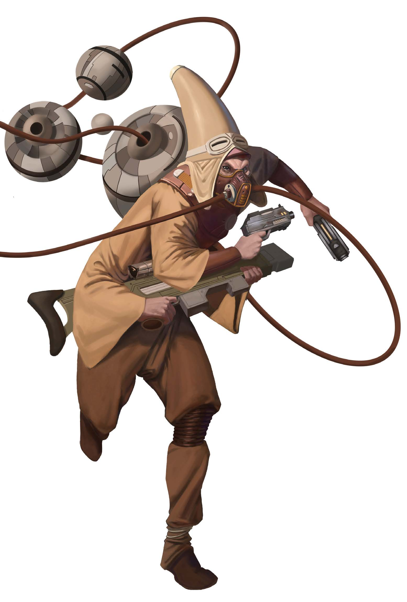
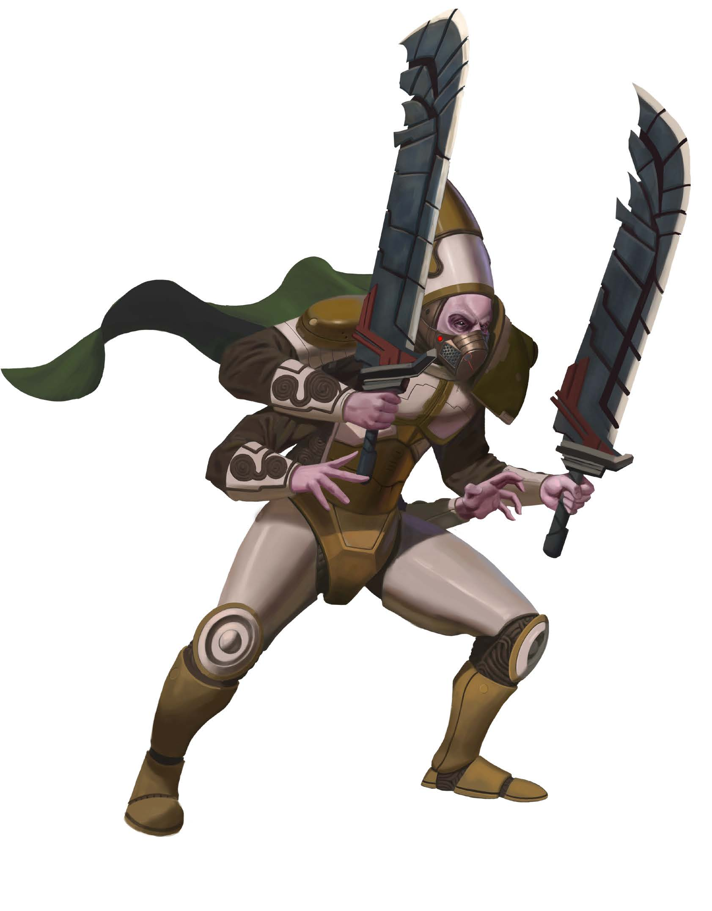

| Aggiungi +1 alle seguenti statistiche: (Attributi +): Forza, Saggezza, Un aumento libero da assegnare. | Sottrai -1 alle seguenti statistiche: Carisma. |
LANGUAGES: Comune, Kasatha.
Una lingua regionale a tua scelta. Lingue aggiuntive pari al tuo modificatore di Intelligenza (se positivo). Scegli dalla lista delle lingue comuni e da qualsiasi altra lingua a cui hai accesso (come le lingue diffuse sul tuo pianeta d'origine).
Possiedi quattro braccia, il che ti consente di impugnare e tenere fino a quattro mani di armi ed equipaggiamento. In qualsiasi momento, una coppia di mani è designata come mani attive.
Puoi cambiare questa designazione da una coppia di mani all'altra eseguendo l'azione Scambiare Mani (Switch Hands), che richiede una singola azione. Puoi impugnare oggetti e combattere solo con le tue mani attive.
Il retaggio di un kasatha può essere influenzato dagli ambienti che i loro antenati hanno abitato su Kasath, dalla stirpe in cui sono nati o dal ruolo dei loro progenitori nella migrazione interstellare.
Tu o i tuoi antenati siete giunti sui Mondi del Patto a bordo dell'Idari e vi stelle stabiliti su Akiton. Probabilmente adori i rituali sportivi dei deserti.
I tuoi antenati scersero di non abbandonare il morente pianeta natale. Cammini tra lande desolate sotto cieli cupi alla ricerca di rifugi sicuri.
Sei nato e cresciuto sulla nave-mondo Idari. La tua famiglia ha mantenuto vive la speranza e la tradizione sopportando le dure condizioni di un lungo viaggio spaziale.
Hai lasciato il luogo natio per viaggiare nel cosmo studiando costantemente le diverse fazioni, filosofie o religioni della galassia.
Stai affrontando la tua Tempra, il rito di crescita in cui un giovane kasatha viaggia rifiutando le tradizioni formali per sperimentare altri costumi estranei.
Mantieni un contegno rilassato e imperturbabile anche quando affronti un pericolo mortale.
Innesco: Un alleato entro 30 piedi (9 mt) tenta di Aiutare (Aid) e ottiene un fallimento.
Hai studiato a fondo le antiche tradizioni kasathane di equilibrio e armonia cosmica.
Nutri un profondo rispetto per il combattimento ravvicinato e le armi cerimoniali.
Frequenza: 1 volta al giorno | Innesco: Fallisci una prova di Acrobazia o un tiro salvezza su Reflex (Riflessi).
L'uso coordinato e quotidiano di tutte e quattro le tue braccia ti consente di gestire i moduli con rapidità estrema.
Sei un archivista meticoloso della cronologia galattica.
Hai imparato ad adattare la tua imponente presenza marziale per brandire armi esotiche o insolite.
Il volto perennemente coperto impedisce agli estranei di scrutinare le tue espressioni micro-facciali.
Frequenza: 1 volta al giorno
Prerequisiti: Historian
I tuoi quattro arti e la tua Deception (Percezione) sensoriale anticipano le minacce nell'aria.
La devozione profonda al Ciclo cosmico ti permette di convogliare le energie planetarie e il fuoco delle stelle.
Hai trovato il perfetto bilanciamento biologico ed energetico per assorbire ed espellere sbalzi termici micidiali.
Le tue profonde pratiche meditative e la conoscenza medica tradizionale purificano i corpi biologici corrotti.
Prerequisiti: Natural Grace